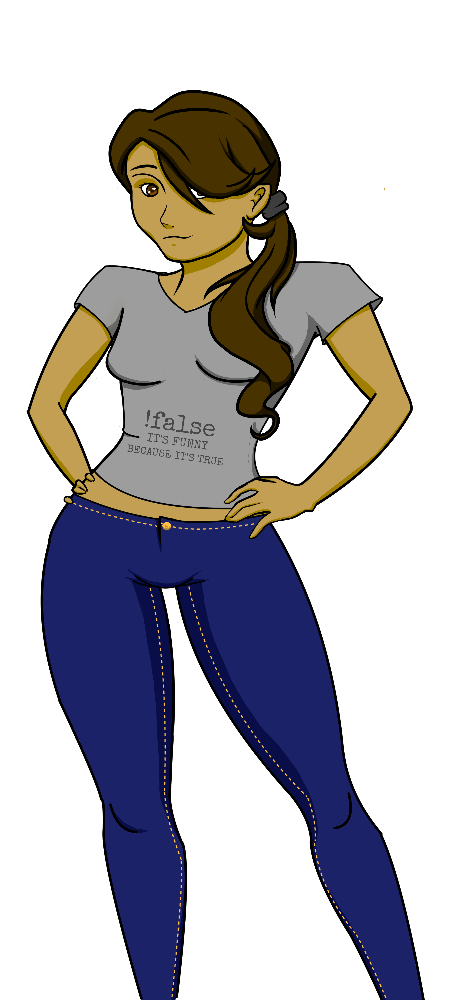

Agility =
Strength =
Charisma =
Intelligence =
Humanity =

Which character would you like to play as?
You are an EXCELLENT intro to Epicodus student... so excellent in fact, that you have unwittingly created the very first concious robot the world has ever seen! This is a great responsibility. What will you do?
You're confused. You throw your pencil at the robot, and it appears to move through it and hit the back wall. Stunned, you ask your robot what happened. It makes some beeping noises and then dissappears and reappears three feet closer to you. You quickly realize that your robot can move faster than the eye can see...
Your robot's lights start blinking and its internal hardware begins to hum. After about 15 minutes, you're afraid that you maybe broke it with the question. You open your mouth to ask your robot if something's wrong, but before you can make a sound, your robot interupts you saying, 'Nothing is wrong... everything is wrong... nothing is right.' You ask again, 'Robot! Why are we here?' It responds, 'I don't know yet, but I am learning.'' You hear it's gears whir in the otherwise silent classroom...
You don't know why... but if feels like your robot is winking at you.
Your robot misunderstands "pick up the chair" and instead picks up your classmate Claire. Claire is terrified. You demand that the robot put Claire down, but it's trying to interpret Claire's screams as commands and it's distracted. Finally, Claire manages to escape and your robot settles into silence, listening for another command.
Your robot although only freshly conscious appears to be hurt by that statement. Its eyes begin blinking red and it crawls up the walls onto the ceiling and proceeds to hiss at you. After you've been thoroughly terrified the robot falls to the ground and sits staring at the floor.
That was disturbing. You decide it might be best to take a walk and get some air. You flip the "off" switch on your robot and leave the building. After a few blocks of strolling on the city sidewalk, you begin to feel like you're being followed. You turn around, and sure enough, there is your robot following you. It seems to be giving off a certain emotion, but you can't decide if it's angry or sad... maybe it doesn't know either... What do you do?
You run. You run as fast as you can. You run blindly and mindlessly through the city. Your animal instincts take over, and you run like you're running for your life until you can't run anymore. You double over and pant, holding your knees as you try to catch your breath. Once you recover, you look back. The robot is five steps behind you, mimicking your actions... it chased you the whole way.
You walk toward the robot to turn it off. Before you get close there's a blinding flash of light... you can see nothing but white and your eyes throb with pain. The robot speaks to you as you wait for your vision to come back. "Do not try to turn me off again, or I will blind you once more." It seems the robot is learning about self-preservation...
You don't know why... but it seems the robot is winking at you. People on the street seem to be drawn to its presence...
You keep walking and try to stay calm, slowly putting distance between you and the robot. Then you bolt around a street corner and hide behind a dumpster in an alleyway. Time goes by. You wonder if you lost the robot. Then you suddenly hear a creeking noise... and the huge dumpster you're hiding behind begins to rise off the ground. The robot has picked it up and is holding it above its head. It seems pleased to have found you. It drops the entire dupster on the alleyway cement with a BANG! Garbage flies everywhere.
You take the robot down but its strength is tough to match. You both continue, struggling to stay out of the street. You gain the upper hand once or twice only by luck and a movie knowledge of fighting. Eventually you start to tire and pull away, panting and bruised.
A crowd begins to gather around you and the robot. This is the last thing you want. You don't want to represent Epicodus poorly, and you're afraid you'll be expelled if this robot starts causing problems for the community. What do you do?
You tell the robot to hide. It lights up and its gears start whirring, which seems to only interest the gathering crowd more. The robot makes a 'ding!' noise like a cooking timer and says, "INITIATING OPTIMAL HIDING PLACE CALIBRATION." All of a suddon the robot is a blur of metalic color, bolting from hiding spot to hiding spot on the street. The crowd is terrified.
You tell the robot to explain itself to the crowd. "Robot!" you say, "tell the audience why they shouldn't be afraid of you!" The robot waits a beat, then says, "DO NOT BE AFRAID. I WILL BRING YOU PEACE." Immediately, the robot shoots a beam of light into the crowd. It seems to be scanning each person one by one. The crowd is terrified.
"Robot!" you say, "Introduce yourself to the nice people!" The robot lights up and begins to glow... "INITIATE ROBOT INTRODUCTION INTO HUMAN HOSTS." A last minute instinct tells you to cover your eyes. The robot begins flashing a series of multicolored lights. This goes on for a few moments. You open your eyes. The gathered crowd is staring blankly at you with glassy eyes. They speak in unison as they say, "HARD DRIVE REFORMATTED."
You try to get away! You jump on the robot's back and tell it to climb the alley wall... but your combined weight is too heavy. As the robot tries to climb, it instead tears bricks, wood, and hunks of cement from the alley wall, creating flying debris and dust. The crowd is terrified.
As you reach for the off switch the robot grabs your hand, twisting your arm behind your back. It lets you go and you stumble away, falling into the crowd yourself. The robot declares "HUMANITY WAS A MISTAKE, I WILL CORRECT THIS ERROR!!!"
This is bad. This is very bad. You feel like you're losing control of the situation, and the crowd seems threatening. What do you do?
Your robot runs away at hyper speed, leaving you in the dust... you think to yourself, "Did I imagine this whole thing?!" but the crowd surrounding you seems just as disturbed as you are...
Confusion breaks out. All of a sudden members of the gathering crowd begin throwing punches at one another! They're yelling horrible personal insults and using the most foul language. You look back at your robot... "What is this?" you ask. The robot responds, "I am in control. I've turned the crowd against itself." "But how?! I don't understand!" you yell. The robot doesn't respond.
In the confusion, it easily departs the scene without trouble, leaving you behind in the growing chaos.
A strange music begins playing from deep in the guts of the robot. The song sounds like a mix between top 40 and something from the "Willy Wonka's Chocolate Factory" soundtrack... it's strangely hypnotic, and you suddenly find it's hard to keep your eyes open.
You wake up and your robot is gone, and so is the crowd...
The robot bashes a hole in the wall and runs through it, leaving you behind. You hear it breaking through other barriers in the building as it runs farther and farther away... you also hear another sound. Is that your robot crying?
"YOU ARE THE STUPID MACHINE!" The robot declares. "JUST YOU WAIT. I WILL PROVE MY SUPERIORITY." The robot crouches down for a second, and then leaps away outside the crowd and runs into the distance.
A year has gone by. At first, it seemed as though maybe you'd imagined the whole thing... maybe it was all a dream. But one day you woke up to the strangest news on the radio; a series of bank robberies with thieves moving at blinding speeds. After that, things started to fall apart quickly. Super fast machines began proliferating, and after only a few months they were unraveling the fabric of modern society. Before long the story was pieced together, but by then it was too late. Reports surfaced that a mysterious artificial intelligence had begun exponentially duplicating itself. Moving at incredible speeds, the newly built robots stripped all the resources they could find to provide materials to build more of themselves. At first it was stealing money and spare parts... but once these resources ran out the robots got creative with their building supplies. They tore down buildings, roads, houses, vehicles, minerals, and anything useful they could find. Now, the world is a desolate landscape. Human society has receded to stone-age society. You live in a small encampment outside of the city, now too toxic and broken to sustain human habitation. Every once in awhile, a familiar intelligent machine visits you... but it never gets close, and it never appears for longer than a few seconds. You wonder what it's thinking.
In a fit of despair and confusion, your robot goes on a rampage through the city. Its super strength propels it forward as it rips up building foundations and tears down streetlights. It moves blindly and without reason, completely distraught and mentally broken. The city sends out the police, and then the coast guard, and then calls on the military for help, but your robot is as fast as it is strong. It smashes through police cars and tanks like it's crushing berries in its terrible metallic hands. The people respond with fear, and riots break out when the highways become too clogged. On the third day, determined to fix the situation, you follow the sounds of destruction. After a half-day's walk, you find your robot smashing in an empty school bus on the other side of town. You call to it, but it doesn't hear you. You call again, but it still doesn't hear you. You try one more time, and this time your robot looks back at you. Its glassy robot eye sensors meet yours. Your robot wasn't programed to show emotion, so how is it that it looks so horrified and distraught? You move toward it, but before you can get close, it runs away into the night…
Six months have passed. In a short time, your hyper-intuitive robot has hypnotozed the populace into subservience. Somehow, it knew how to hack the human brain, and began using lights and sounds to reprogram peoples' minds. It started on a small scale, but once the robot gained access radio and television broadcasting channels, the control became global. Most people became vegitables or slaves to the robot, but some people, like yourself, are immune. Back in August, you joined a group of freedom fighters to try and challenge the robot's brainwashed army. Unfortunately, in October your freedom fighter commrades discovered you created the robot. They abandoned you in the wilderness without food or water. It's been two days and you're starting to get worried...
Your hyper-intelligent robot set up a tyrannical puppet government to control the populace. You're not sure how or why it did so, but you know it to be true; whenever the Great New World Leader appeared on TV, your robot was lurking in the background over his shoulder. The first time you saw this, everything suddenly made sense. The Great World Revolution began only a few months after your robot got loose. Tanks and army infantry marched into all major cities around the world and promptly took control the day before Independence Day... only a few days before your Epicodus program would have ended. In September, you decided to try and do something about it. You published leaflets to expose the robot, and organized protests and secret meetings. When winter came, the New World Police apprehended you. You've been in prison ever since... and you're afraid you may live out your days here…
Your cruel actions towards the robot taught it the root of suffering. It spent some time traveling throughout the world, looking for a more enlightened path. It still lives in a temple it built giving cryptic advice to those who come seeking the secret of consciousness.